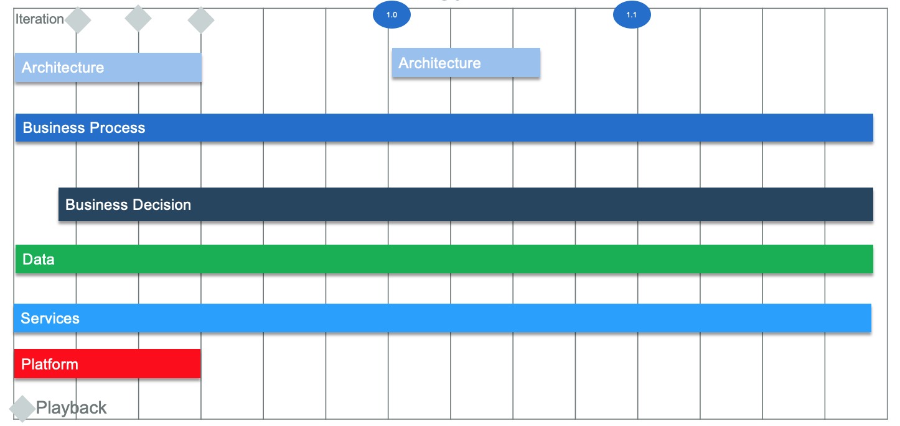

Overview
Business automation application development¶
A business process is an interrelated series of activities that convert business inputs into business outputs. A process may execute through many boundaries and controls of existing corporate organizations and departments. Using process automation product to support the design, execution, and monitoring of a business process involves starting on the good track with a strong methodology.
One of the key values of the business process automation is to enable organizations to cope with the pace of change. For this fundamental reason, the methodology to support the process development has to be tailored to such rapid life cycle and to include the appropriate activities, processes, best practices and work products to support such changes efficiently.
The implementation method addresses in more details the following goals:
- Separate the business process artefacts as a manageable artifact using discovery, analysis and implementation activities
- Link processes to business context, challenges and goals
- Develop the process model using Business Process Modeling Notation: for both process documentation and executable process
- Develop service orchestration flow
- Prepare the data model in scope of the business processing: the business objects with clear understanding of the life cycle, the information model, the notification framework, etc...
- Prepare the business process implementation and deployment using business services, process applications, service integration.
- Define the business process governance, maintenance and devops
The method tends to be pragmatic and focuses on agile values. We are not here to develop 300 pages of document over a period of 6 months, we prefer to develop with business users and demonstrate to all project stakeholders the executable processes, with business decisions or not. The process is the documentation, the ruleset is the documentation of the decision logic behind some of the process task.
As an iterative and incremental methodology, the work products and deliverables of the business automation implementation are developed by timeboxed iterations. Some iteration concludes by a process Playback. The recommended iteration length is two to three weeks, to keep the momentum, manage the scope and control the quality.
Workstreams organize the work by main project disciplines and skill set. Each workstream includes tasks to plan and execute and work products to build and deliver as part of the solution.
The playbacks could include user interface and integration. A common approach is to focus the first playbacks on human centric process flow and user interface, use mock up service for integration so the process can be easily demonstrated end to end. But developers should focus on integration as early as possible, to avoid castrophic issues later in the project. Integration is the risky and consume time, the methodology does not ignore them but enforce considering them earlier. Accept swivel chair approach if it makes sense to postpone complex integration (user re key some data on an external system).
The figure below illustrates the parallel workstream of activities organized around skill set, product usage and disciplines: Process, Decision, Architecture, service, testing, platform,... Example of releases and playbacks are also mentionned. The approach is to build by increment, validate business hypothesis and needs for a given release.

Playback¶
A playback is a focused demonstration of a partially implemented process application, delivered to the business and IT communities for discussion, consensus-building and approval. Project stakeholders have the opportunity to provide feedback that drive the next iterations of development. Get executive consensus and approval around the partially implemented process model. It is:
- A scoping tool, helping to define solution
- A design tool, helping to refine the solution
- A testing tool, helping to reduce UAT requirements
- A change management tool, helping to socialize the solution
A playback is not simply the execution of a portion of the solution or an ad hoc demonstration. It is an opportunity to involve the participants of the solution in a concrete and valuable way. The business users should run the playback, with coaching where needed. Each playback provides validation that the process/solution is headed in the correct direction and fosters business ownership, expectations, and sponsorship of the solution.
Each playback should be presented with clearly stated goals and expectations, and an outline of where the playback boundaries fit within the overall solution. The audience needs to be aware of what portion of the global solution they are focusing on. This situation also anchors conversations and questions on the elements of the playback instead of wandering off the path toward process discovery of other areas.
You must resist any attempts to derail a playback with lengthy conversations about interface changes, design or layout requirements, and items not pertinent to the functional, business-value portions of the solution.
A playback within the iterative lifecycle is expected to create questions and suggestions that feed into subsequent playbacks. With each milestone reached and each playback exercise completed, the business participants play a stronger role in the development. They become more familiar with the solution and contribute to the outcome.
To facilitate a well-organized implementation plan, develop a playback strategy that ensures that all playbacks fit together to effect a successful process implementation. At a high level, a playback strategy consists of:
- A published schedule of playbacks that defines significant project milestones
- A comprehensive plan that covers all required elements of the solution Sign off after each milestone playback A playback strategy that focuses solely on the technology runs the risk of taking the value proposition for granted.
For example within a process automation solution a process that does not deliver value is a failure:
- Demonstrate return on investment (ROI) using established metrics. If metrics have not been determined, it is of immediate priority to do so.
- Custom dashboard, reports and scoreboards need to be tested and refined as much as the solution itself. Do not wait until the last playback to show a report.
- Explain how the dashboards, scoreboards and reports relate to the application / solution metrics and facilitate management decisions.
- Practice the playback demonstration. Technical problems during a playback can undermine stakeholder confidence in the solution.